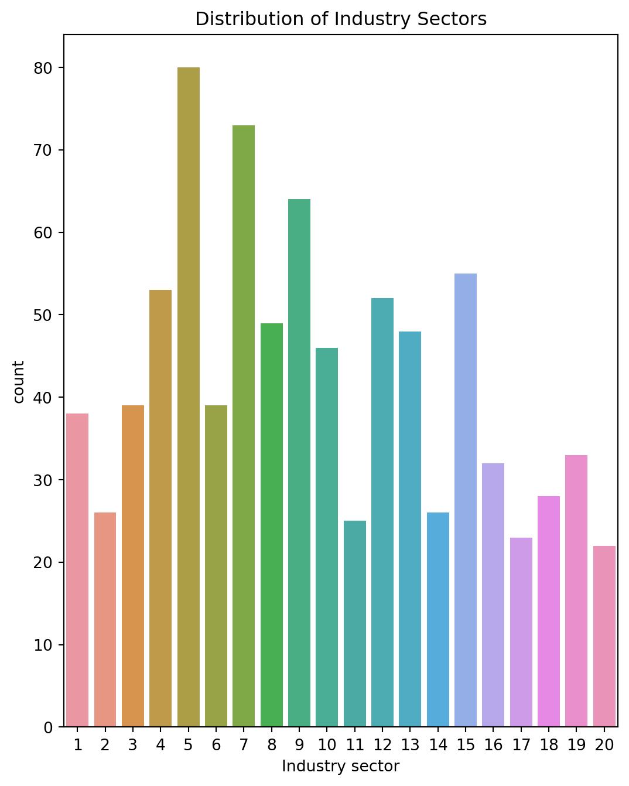

Our analysis is based on datasets primarily sourced from a survey conducted in 2023. This survey, designed and executed by our research team, targeted participants from a wide range of occupations across the USA. Its focus was on examining the significant impact of remote work on urban development and residential choices. The participants provided their insights through a detailed questionnaire, which covered aspects such as working methods (remote or in-person) and their effects on housing location preferences. This rich data offers insights into behavioral patterns related to working modes, thereby illuminating the interplay between human activity and urban spatial dynamics.
Data Modification for Privacy and Educational Use:
It’s important to note that the datasets featured in these blog posts have been modified and synthesized for educational purposes. They demonstrate various data analysis techniques but are not suitable for real-world applications due to these modifications. In compliance with data privacy guidelines, we have anonymized the dataset to maintain the confidentiality of the survey participants. However, these modifications do not detract from the overall integrity and analytical value of the data.
Primary Objective of the Dataset:
The main aim of this dataset is to explore the dynamics of the job market and their influence on urban landscapes. One of the key areas of inquiry in the survey was the industry sector and the preferred working method of the participants. By analyzing these elements, we gain a better understanding of current trends in the job market and how they shape urban environments.
Key Elements of the Dataset:
In recent years, we’ve witnessed significant shifts in work methodologies. A growing number of professionals are embracing the Work From Home (WFH) approach, while a substantial segment continues to follow traditional Work On Site (WOS) practices. This study comprehensively covers 20 distinct industry sectors, focusing on four distinct categories of working methods. The details of these methods are outlined below:
#
Working Method
1
Fully remote (working from home or another location)
2
Fully in-person (working at a physical office or location)
3
Hybrid, dominated by in-person work (spending the majority of your work time at a physical office or location, with some remote work)
4
Hybrid, dominated by remote work (spending the majority of your work time working from home or another location, with some in-person work)
Twenty “industry sectors”or jobs are addressed based on the NAICS (North American Industry Classification System) to the 2-digit industry level. these jobs are as the following:
The number of industry sectors in NAICS
Description
1
sector 11
Agriculture, Forestry, Fishing and Hunting
2
sector 21
Mining, Quarrying, and Oil and Gas Extraction
3
sector 22
Utilities
4
sector 23
Construction
5
sector 31-33
Manufacturing
6
sector 42
Wholesale Trade
7
sector 44-45
Retail Trade
8
sector 48-49
Transportation and Warehousing
9
sector 51
Information
10
sector 52
Finance and Insurance
11
sector 53
Real Estate and Rental and Leasing
12
sector 54
Professional, Scientific, and Technical Services
13
sector 55
Management of Companies and Enterprises
14
sector 56
Administrative and Support and Waste Management and Remediation Services)
15
sector 61
Educational Services
16
sector 62
Health Care and Social Assistance
17
sector 71
Arts, Entertainment, and Recreation
18
sector 72
Accommodation and Food Services
19
sector 81
Other Services (except Public Administration)
20
sector 92
Public Administration (not covered in economic census)
Essentially, we want to see if the way people work is related to the industry they work in., Chi-Square Test of Independence is used to determine whether there is an association (relationship) between two categorical variables.
In our analysis, we’re testing two ideas:
The null hypothesis (H0): There’s no link between an employee’s industry sector and their working method. They’re independent of each other.
The alternative hypothesis (Ha): There is a significant link between the industry sector and the working method of employees.
# Load necessary librariesimport pandas as pdimport matplotlib.pyplot as pltimport seaborn as snsfrom scipy.stats import chi2_contingency# Load your dataset without specifying encodingdata = pd.read_excel('Industry sector and working method.xlsx')# Summary statistics for Industry sectorindustry_stats = data[' Industry sector'].value_counts()# Summary statistics for Working Methodmethod_stats = data['Working Method'].value_counts()# Custom labels for Working Method, with line breaksworking_method_labels = ['Fully remote\n(working from home or another location)','Fully in-person\n(working at a physical office or location)','Hybrid, dominated by\nin-person work','Hybrid, dominated by\nremote work']# Plotting with adjusted figure size and subplot parametersplt.figure(figsize=(14, 8)) # Further increase the figure size# Industry Sector plotplt.subplot(1, 2, 1)sns.countplot(data=data, x=' Industry sector')plt.title('Distribution of Industry Sectors')# Plotting with horizontal bar chartplt.figure(figsize=(6, 5)) # Adjust figure size for horizontal plot# Working Method plot (horizontal)sns.countplot(data=data, y='Working Method')plt.title('Distribution of Working Methods')plt.yticks(range(len(working_method_labels)), working_method_labels) # Set y-axis labelsplt.tight_layout()plt.show()

Alos, this plot is designed to visually explore the relationship between the industry sectors of employees and their working methods. It illustrates how the distribution of working methods varies across different industry sectors, allowing us to identify notable patterns or differences. Such visualizations are crucial for understanding the dynamics of the job market, particularly in the context of evolving work methodologies.
crosstab = pd.crosstab(data[' Industry sector'], data['Working Method'])crosstab.plot(kind='bar', stacked=True)
<Axes: xlabel=' Industry sector'>
Additionally, the dataset contains several key elements that will be crucial for our upcoming statistical analyses. The most important elements include: